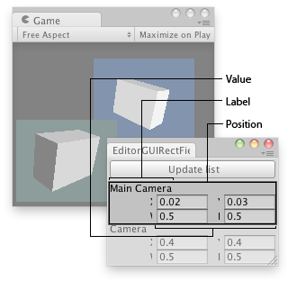

EditorGUI.RectField
Parameters
| position | Rectangle on the screen to use for the field. | |
| label | Optional label to display above the field. | |
| value | The value to edit. |
Returns
Rect The value entered by the user.
Description 描述
Makes an X, Y, W, and H field for entering a Rect.

Rect field in an Editor Window.
using UnityEngine; using UnityEditor;
// Find all the cameras in the Scene and shows all their viewports togheter
class EditorGUIRectField : EditorWindow { Camera[] cameras;
[MenuItem("Examples/Editor GUI RectField usage")] static void Init() { var window = GetWindow<EditorGUIRectField>(); window.position = new Rect(0, 0, 150, 120); window.Show(); }
void OnGUI() { if (GUI.Button(new Rect(3, 3, position.width - 6, 20), "Update list")) cameras = FindObjectsOfType<Camera>();
if (cameras.Length > 0) { for (var i = 0; i < cameras.Length; i++) { cameras[i].rect = EditorGUI.RectField( new Rect(3, 25 + 45 * i, position.width - 6, 25), cameras[i].name, cameras[i].rect); } } } }
Description 描述
Makes an X, Y, W, and H for Rect using SerializedProperty (not public).